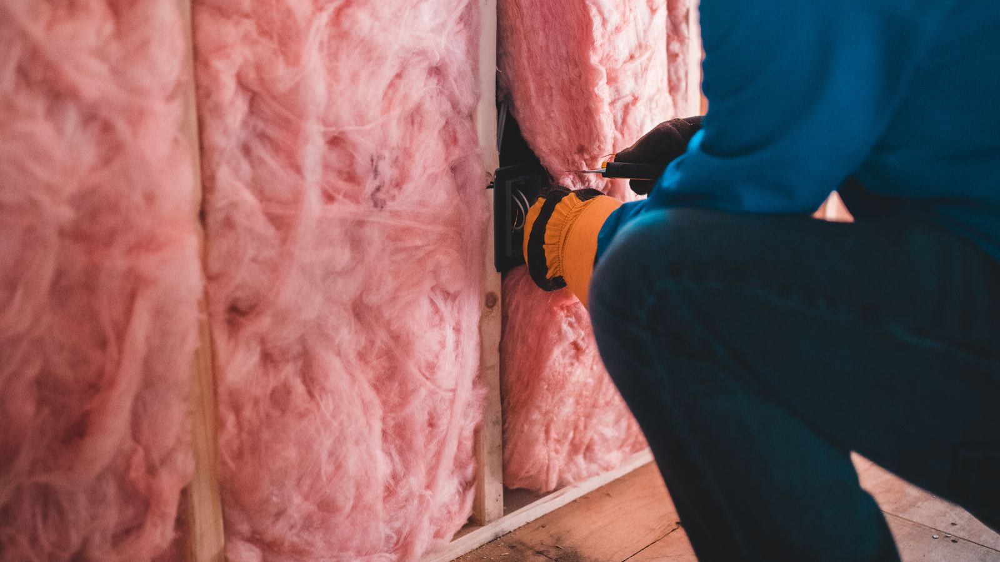

Crawl Space Encapsulation & Dehumidifiers in Savannah, GA
A vented crawl space in coastal Georgia doesn't dry out in summer – it pulls humid outside air onto cool surfaces and condenses it. Encapsulation ends that cycle.
The logic behind crawl space vents assumed outdoor air is drier than crawl space air. On the Georgia coast in July it very often isn't. Warm, humid air entering a cool crawl space raises the relative humidity against the framing, and wood that stays above roughly twenty percent moisture content is wood that rots and grows mould.
Encapsulation treats the crawl space as part of the building rather than as outdoors: a heavy sealed liner across the ground and up the piers and walls, vents closed, and a dehumidifier sized for the volume to hold the space at a stable humidity year-round.

Crawl Space EncapsulationSigns your crawl space needs it
- Musty smell in the house, strongest near floor vents or closets
- Visible condensation on ducts, pipes, or the underside of the floor
- Insulation sagging out of the joist bays or lying on the ground
- Mould or dark staining on joists, girders, or subfloor
- Standing water or consistently damp soil after ordinary rain
- Floors that feel cold and humid, or cupping hardwood above
What a proper encapsulation includes
Deal with the water first. Sealing a liner over standing water traps the problem. Grading, drainage, and a sump where it's needed come before the plastic.
Heavy liner, sealed – not a loose sheet. A reinforced vapour barrier across the ground and up the piers and walls, with seams and penetrations sealed and the edges mechanically fastened.
Close and seal the vents. Half-measures leave a humid-air path straight back in.
A dehumidifier sized to the space. An undersized household unit runs constantly and never wins. Sizing matters more than brand.
What drives the cost
- Crawl space square footage and headroom to work in
- Whether drainage or a sump is needed before the liner goes down
- How much damaged insulation and debris has to come out first
- Dehumidifier capacity the volume actually requires
This is generally a mid-range job, priced mostly by square footage and whether water management is needed first. It is also the one with the clearest return on the structural side: it's what stops you paying for joist replacement a second time.
Free structural inspection
Elevation readings, a look at the actual failure, and a written scope with a real number – before you commit to anything.
Crawl Space Encapsulation – common questions
Isn't a crawl space supposed to be vented?
That was the standard assumption for decades, and it works in a dry climate. In coastal Georgia, outdoor summer air is often more humid than the crawl space it's venting into, so the vents raise humidity against the framing instead of lowering it. Sealed-and-conditioned is now the widely accepted approach for this climate.
Do I still need a dehumidifier if the crawl space is sealed?
In this climate, yes. The liner stops moisture coming up from the soil, but it can't remove what's already in the air or what enters when the hatch opens. A correctly sized dehumidifier is what actually holds the humidity down year-round, and without one an encapsulation underperforms.
Will this fix a floor that already sags?
No – encapsulation stops the cause, it doesn't restore the structure. Framing that has already lost strength needs the structural repair as well. The two are usually done together for exactly that reason: one fixes what happened, the other stops it happening again.
Often done alongside this
Crawl Space Encapsulation across Chatham County
Want it looked at properly?
The inspection is free, and if the answer is that it can wait, that's what we'll tell you.